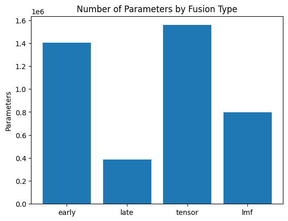
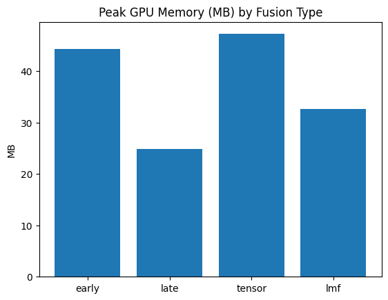
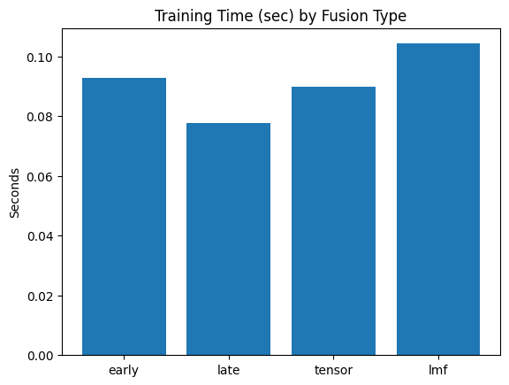

MMAI 2026
Bio
Hi, I'm Winston Qian. I am a student taking 6.S985: Modeling Multimodal AI in the Spring of 2026. This portfolio showcases my homework and final project explorations in vision-language models, multimodal alignment, and brain-to-vision decoding.
Homework
Homework 1 — Dataset
Multimodal TVQA Preprocessing
Extracting visual and semantic modalities from TVQA for multimodal reasoning.Homework 2 — Fusion
Multimodal Fusion and Alignment
Evaluating fusion techniques and contrastive learning on TVQA.Homework 3 — VLM
Vision-Language Model Fine-Tuning
Fine-tuning Qwen2.5-VL with LoRA for zero-shot reasoning on TVQA video clips.Homework 4 — TBD
TBD
TBDHomework 5 — TBD
TBD
TBD
Highlights

HW1 — Multimodal TVQA Preprocessing



HW2 — Multimodal Fusion and Alignment
HW3 — VLM Fine-Tuning for Action Reasoning
HW4 — TBD
HW5 — TBD
About This Site
Repository
Source code lives at github.com/winstonqian/mmai.
Built from the Academic Project Page Template and adapted into a course portfolio / homework hub.
License
This site content is licensed under Creative Commons Attribution-ShareAlike 4.0 International .
Site Manifest
@misc{qian_mmai_2026,
title = {MMAI 2026},
author = {Winston Qian},
howpublished = {\url{https://winstonqian.github.io/mmai/}},
note = {Modeling Multimodal AI 2026 course site: homework, final project, and notes},
year = {2026}
}